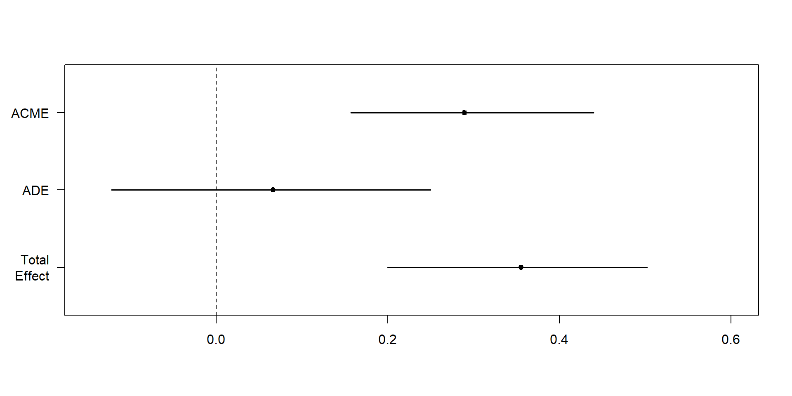

Mediation Designs
DClin Research Methods 1
Dr Christopher Wilson
Teesside University
Overview
What is mediation?
The Baron and Kenny (1986) approach to mediation
The Preacher and Hayes (2008) approach to mediation
What is bootstrapping?
Mediation analysis with a categorical mediator or predictor
Today
- Thinking about more than outcomes. Designing studies to answer more specific research questions / think about process.
- “Why is this happening?”
- “What is the mechanism?”
Distinguishing between moderation and mediation
Distinguishing between moderation and mediation
What type of research question?
Mediation is an analysis technique. However, we use it to answer the following type of research question:
To what extent is the relationship between X and Y mediated by a another variable (M)?
Consider the following example:
A researcher is interested in the relationship between the treatment a person receives and their mental health. They hypothesise that the relationship between treatment and mental health is mediated by the extent to which they practice the techniques they are taught in therapy, in their everyday life.
Visualising mediation
What is the difference between mediation and moderation?
Mediation theorising about the mechanism by which an effect occurs.
Moderation is theorising about the conditions under which an effect changes.
That is, from a theoretical perspective:
mediation is hypothesising about why something happens in a relationship, and suggesting that the relationship can be explained through the mediator variable.
Moderation is hypothesising about that a relationship is different under certain conditions (i.e. the changing level of the moderator variable).
How do we test for mediation?
There are a number of ways to test for mediation.
- The “classic” approach is to use the Baron and Kenny (1986) approach.
- The “modern” approach is to use the Preacher and Hayes (2008) approach.
It is worth understanding both approaches, as they are both used in the literature.
However, the Preacher and Hayes approach is more roust and more flexible.
Baron and Kenny (1986) approach to mediation
Baron and Kenny (1986) approach to mediation
Baron and Kenny (1986) approach to mediation is a three step process.
The first step is to show that the independent variable (X) is related to the mediator (M).
The second step is to show that the mediator (M) is related to the dependent variable (Y).
The third step is to show that the relationship between the independent variable (X) and the dependent variable (Y) is reduced when the mediator (M) is included in the model.
The Sobel test is used to test the significance of the indirect effect.
Visualising mediation
Baron and Kenny (1986) approach to mediation #2
If we assume that we have the following data:
- X is the independent variable (treatment)
- M is the mediator (practice)
- Y is the dependent variable (mental health)
Then we would need to show that:
- X is related to Y (Path C total effect)
- X is related to M (path A)
- M is related to Y (path B)
- The relationship between X and Y is reduced when M is included in the model. (path C direct effect)
Baron and Kenny (1986) approach to mediation #3
Code
- 1
- Total Effect of X on Y. This should be significant.
- 2
- Path A (X on M). This should be significant.
- 3
- Path B (M on Y). This should be significant.
- 4
- Reversed Path C (Y on X, controlling for M). This should be non-significant.
View the results
Baron and Kenny Method
===============================================================================================================
Dependent variable:
-------------------------------------------------------------------------------------------
Y M Y X
(1) (2) (3) (4)
---------------------------------------------------------------------------------------------------------------
X 0.361*** 0.688***
(0.074) (0.070)
Y 0.076
(0.106)
M 0.474*** 0.686***
(0.070) (0.089)
Constant -13.968 1.493 -8.525 88.074***
(13.102) (12.315) (8.605) (9.072)
---------------------------------------------------------------------------------------------------------------
Observations 100 100 100 100
R2 0.193 0.497 0.318 0.499
Adjusted R2 0.185 0.492 0.311 0.489
Residual Std. Error 5.194 (df = 98) 4.882 (df = 98) 4.777 (df = 98) 5.012 (df = 97)
F Statistic 23.498*** (df = 1; 98) 96.713*** (df = 1; 98) 45.604*** (df = 1; 98) 48.375*** (df = 2; 97)
===============================================================================================================
Note: *p<0.1; **p<0.05; ***p<0.01In the table above, all of the paths are significant. However, the relationship between X and Y is no longer significant when M is included in the model.
Test the significance of the indirect effect
We can test the significance of the indirect effect using the Sobel test.
The Preacher and Hayes (2008) approach to mediation
Step 1: Run the models
Step 2: Check assumptions
Call:
lm(formula = M ~ X, data = Meddata)
Coefficients:
(Intercept) X
1.4931 0.6882
ASSESSMENT OF THE LINEAR MODEL ASSUMPTIONS
USING THE GLOBAL TEST ON 4 DEGREES-OF-FREEDOM:
Level of Significance = 0.05
Call:
gvlma(x = fitM)
Value p-value Decision
Global Stat 3.79548 0.43439 Assumptions acceptable.
Skewness 0.18364 0.66826 Assumptions acceptable.
Kurtosis 3.22497 0.07252 Assumptions acceptable.
Link Function 0.05126 0.82088 Assumptions acceptable.
Heteroscedasticity 0.33561 0.56238 Assumptions acceptable.
Call:
lm(formula = Y ~ X + M, data = Meddata)
Coefficients:
(Intercept) X M
-14.60054 0.06949 0.42346
ASSESSMENT OF THE LINEAR MODEL ASSUMPTIONS
USING THE GLOBAL TEST ON 4 DEGREES-OF-FREEDOM:
Level of Significance = 0.05
Call:
gvlma(x = fitY)
Value p-value Decision
Global Stat 4.48046 0.34487 Assumptions acceptable.
Skewness 0.07082 0.79015 Assumptions acceptable.
Kurtosis 0.18593 0.66633 Assumptions acceptable.
Link Function 3.60465 0.05762 Assumptions acceptable.
Heteroscedasticity 0.61907 0.43139 Assumptions acceptable.Step 3.1: Run the mediation analysis on the models
Causal Mediation Analysis
Quasi-Bayesian Confidence Intervals
Estimate 95% CI Lower 95% CI Upper p-value
ACME 0.289138 0.156561 0.440034 <2e-16 ***
ADE 0.066264 -0.122160 0.249925 0.51
Total Effect 0.355402 0.200147 0.501757 <2e-16 ***
Prop. Mediated 0.809159 0.418090 1.553460 <2e-16 ***
---
Signif. codes: 0 '***' 0.001 '**' 0.01 '*' 0.05 '.' 0.1 ' ' 1
Sample Size Used: 100
Simulations: 1000 Step 3.1: Run the mediation analysis on the models
The mediate function gives us:
- Average Causal Mediation Effects (ACME)
- Average Direct Effects (ADE)
- combined indirect and direct effects (Total Effect)
- the ratio of these estimates (Prop. Mediated).
The ACME here is the indirect effect of M (total effect - direct effect) and thus this value tells us if our mediation effect is significant.
Step 3.2: Plot the mediation analysis of the models
Step 3.2: Plot the mediation analysis of the models
The plot reiterates what was on the previous slide:
- The confidence intervals of Total Effect and ACME are significant
- The confidence interval of ADE is not significant
Translation:
- Total effect is significant: there is a relationship between X and Y (direct and indirect)
- ADE is not significant: the relationship between X and Y is not direct
- ACME is significant: the relationship between X and Y is mediated by M
Bootstrapping
Bootstrapping the mediation model
By default, the mediate function uses bootstrapping to estimate the confidence intervals of the mediation effects.
Bootstrapping is a more robust method of estimating confidence intervals than the Sobel test.
Bootstrapping is a simulation method that involves repeatedly sampling from the data with replacement. This is done 1000 times by default.
The confidence intervals are then estimated from the distribution of the bootstrapped estimates.
Why use bootstrapping?
Bootstrapping is non-parametric, which means that it does not assume that the data are normally distributed.
The Sobel test assumes that the data are normally distributed, and is therefore less robust.
Bootstrapping is robust to violations of normality, heteroscedasticity, and outliers.
Bootstrapping is not just for mediation analysis, it can be used for any statistical analysis, to estimate confidence intervals.
Mediation analysis with a categorical mediator
Mediation analysis with a categorical mediator or predictor
The mediation package can also be used to test for mediation with a categorical mediator or predictor.
The approach is the same as above, but the regression models will specify the mediator or predictor as a factor example here.
This will mean that some of the regression models will be logistic regression models, like this :
model <- glm(Outcome ~ Categorical_Predictor,family="binomial",data=myData)- The mediation analysis will then be run as outlined earlier.
Summary
What is mediation?
The Baron and Kenny (1986) approach to mediation
The Preacher and Hayes (2008) approach to mediation
What is bootstrapping?
Mediation analysis with a categorical mediator or predictor
References
Baron, R. M., & Kenny, D. A. (1986). The moderator–mediator variable distinction in social psychological research: Conceptual, strategic, and statistical considerations. Journal of personality and social psychology, 51(6), 1173.
Preacher, K. J., & Hayes, A. F. (2008). Asymptotic and resampling strategies for assessing and comparing indirect effects in multiple mediator models. Behavior research methods, 40(3), 879-891.
Hayes, A. F. (2013). Introduction to mediation, moderation, and conditional process analysis: A regression-based approach. Guilford Press.
Hayes, A. F., & Rockwood, N. J. (2017). Regression-based statistical mediation and moderation analysis in clinical research: Observations, recommendations, and implementation. Behaviour research and therapy, 98, 39-57.